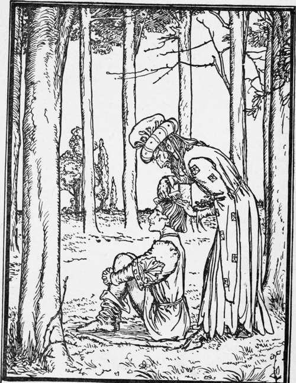

Bear Skin. Continued
Description
This section is from the book "Household Tales by Brothers Grimm", by Brothers Grimm. Also available from Amazon: Household Tales by Brothers Grimm.
Bear Skin. Continued
It was in the course of the fourth year that he came to an inn, the landlord of which refused to take him in, or even to allow him a place in the stables, for he was afraid that even the horses would take fright.
But when Bearskin put his hand in his pocket and then held it out to him full of gold pieces, the landlord thought better of it, and gave him a room in one of the back parts of the house, making him promise, however, not to let himself be seen, as it would give his house a bad name.
As Bearskin sat alone that evening, wishing with all his heart that the seven years were over, he heard sounds of lamentation in the adjoining room. He was a man of a kind and sympathizing heart, and he therefore went to the door and opened it, and there he saw an old man flinging up his arms in despair and weeping bitterly.
Bearskin stepped nearer, but at first sight of him, the old man sprang up and was about to escape from the room. He paused, however, when he heard a human voice, and finally, so persuasively did Bearskin speak to him, he was induced to disclose the cause of his distress. It seemed that his wealth had diminished more and more, until he and his daughters were now in a state of starvation ; he was too poor even to pay the landlord what he owed him, and was threatened with imprisonment. "If that is the extent of your trouble," said Bearskin, "I have money and to spare," and he thereupon sent for the landlord, settled his account, and put a large purse of gold besides into the poor old man's pocket.
When the old man saw himself so wonderfully delivered from his trouble, he did not know how to express his gratitude. "Come home with me," he said to Bearskin. " I have three daughters, all miracles of beauty, choose one of them for your wife. When she hears what you have done for me, she will not refuse you. Your appearance is just a little peculiar, I must confess, but she will soon put all that right for you."
Bearskin was delighted with this proposal and went home with him.
At the first sight of his face, the eldest daughter was so horrified, that she screamed and rushed from the room. The second daughter did not indeed run away, but she looked at him from head to foot, then she spoke and said, "How can I marry a man who has no longer eyen the semblance of a human being ? I would rather have the shaven bear that was on show here once, and gave himself out for a man ; he had at least a good soldier's coat and a pair of white gloves. If it were only a matter of ugliness, I might grow accustomed to him." Then the youngest rose and said, "Dear father, the man who has helped you out of your trouble must be a good man, and if you have promised one of us to him as a wife, your word must not be broken." It was a pity that Bearskin's face was just then so covered with dirt and hair, or those present might have seen how the heart within him laughed for joy when he heard those words. He took a ring from his finger, broke it in two, and gave one half to the girl, and kept the other himself. Then he wrote her name in his half, and his own name in hers, begging her at the same time to keep it safely. After this he took his leave. " I must continue my travels for three more years," he said to his betrothed; "if at the end of that time I do not return, you may know that I am dead and that you are free; but pray to God for me that my life may be spared."
The poor young girl clad herself all in black, and whenever she thought of her betrothed husband, her eyes filled with tears. Her sisters treated her to nothing but scorn and derision. " Take care how you offer him your hand," the eldest would say, "for he will give you a blow with his paw." "You must be careful," said the other, " for bears are fond of sweet things, and if he finds you to his taste, he will eat you up." « You must never do anything to irritate him," the eldest would start again, uor he will begin to growl." "But the wedding will be very lively," continued the second, "bears dance so well." The youngest made no answer, and would not allow herself to be put out by these taunts.
Meanwhile Bearskin wandered about from place to place, doing all the good he could, and giving freely to the poor in order that they might pray for him. The last day of the seven years dawned at last. Bearskin went to the heath again, and sat down under the trees. Before long there came a sudden rush of wind, and the same figure stood looking at him as before, but this time it was evident that he was in a very bad humour. He threw his old coat back to Bearskin and asked for his green one.
" We have not come to that part of the business yet," said Bearskin, "you must first make me clean." And whether he liked it or not, the Devil was now obliged to fetch water and wash him, comb his hair, and cut his nails. Bearskin now looked once more like a brave soldier, and was handsomer than he had ever been before.
Having at last said good-bye to the Devil, Bearskin felt like a free man again. Joyful and light-hearted he went into the town, put on a magnificent garment of velvet, ordered a carriage and four horses, and drove to the house of his betrothed. No one of course recognised him; the father took him for some distinguished military officer, and led him into the house and introduced him to his daughters. He was invited to sit down between the two eldest, and they poured him out wine, and offered him the daintiest food, thinking all the while, that they had never before seen such a splendid-looking man. His betrothed sat opposite to him, with her eyes cast down and not speaking a word. When finally he asked the father if he would give him one of his daughters for wife, the two eldest sprang up and ran to their rooms to put on their richest attire, for each felt certain in her own mind that she was the chosen one. As soon as the stranger found himself alone with his betrothed, he drew out his half of the ring, and threw it into a goblet of wine which he then handed across to her. She took it from him and drank, but her heart gave a great throb as she saw the half ring at the bottom. She took her own half, which was hung round her neck by a ribbon, placed it against the other, and saw that the two pieces fitted exactly. Then he spoke and said, " I am your betrothed husband, whom you only saw as Bearskin, but, by the grace of God, my human form is returned to me, and I am clean once more." And saying this he went up to her, and embraced and kissed her. At this moment the sisters returned, clad in gorgeous apparel, but when they saw that it was their youngest sister whom the handsome man had chosen, and were told that he was Bearskin, they were so overcome with rage and envy that they both rushed out of the house, and one of them drowned herself in the well, the other hung herself on a tree.
Continue to:
- prev: Bear Skin
- Table of Contents
- next: The Jew In The Bush
Tags
fairy tales, children's stories, brothers grimm, household tales